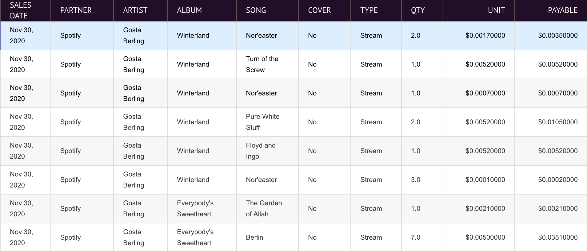

Using the Spotify API and spotifyr package to visualize some music I’ve made
For this post, I thought I’d focus on music analytics, given that music and data science/analysis are two things I’ve probably spent most of my waking hours doing for a number of years now.
Over the years I’ve made a lot of music in a number of different projects. For most of my time living in the Bay Area I’ve played with some friends in a band called Gosta Berling. We’ve released two EPs and a full album (click on the album covers to give listen)
Our sound could be called melancholy mood-pop. We like melody, but we were raised on brooding post-punk so a minor key vibe is definitely present. The Spotify API has musical features including danceability, energy, and valence (what they call ‘happiness’). I used Charlie Thompson’s spotifyr package to see how we score. spotifyr has a bunch of functions designed to make it easier to navigate Spotify’s JSON data structure.
One quick thing…I’m using Spotify data so in effect validating Spotify. While I appreciate the availability of the data for projects like this, Spotify needs to do much better by way of paying artists. We don’t have tons of streams, but as you can see from this account report…

…artists get f$ck-all per stream. So sure, use Spotify, it’s a great tool for discovering new music. And while artists pressure them to pay more per stream, you can help by purchasing music from artists you like. The pandemic has killed touring income, so sales are all that many artists have to support themselves. Help them out, buy the music you like. Especially if they’re on Bandcamp and you buy 1st Fridays, when Bandcamp waives their revenue share, meaning the artist gets every penny. Did I mention you can buy our music on Bandcamp? :)
Anyway, soapbox off…first thing, let’s load the packages we’ll be using:
library(spotifyr) # pull data from spotify
library(tidyverse) # to do tidyverse things
library(tidylog) # to get a log of what's happening to the data
library(janitor) # tools for data cleaning
library(patchwork) # to stitch together plots
library(ggtext) # helper functions for ggplot text
library(ggrepel) # helper functions for ggplot text
library(httr)
library(stringr) # work with string data
library(lubridate) # work with dates
library(GGally) # correlation plots
library(PerformanceAnalytics) # correlation plots
library(corrr) # correlation plotsTo get access the Spotify data, you need a developer key. Charlie’s explained how to do it on the package page, so I won’t repeat that here. To set up the keys in your .Renviron, run usethis::edit_r_environ() and add (where the xs are your codes):
SPOTIFY_CLIENT_ID = 'xxxxxxxxxxxxxxxxxxxxx'
SPOTIFY_CLIENT_SECRET = 'xxxxxxxxxxxxxxxxxxxxx'
# or do
Sys.setenv(SPOTIFY_CLIENT_ID = 'xxxxxxxxxxxxxxxxxxxxx')
Sys.setenv(SPOTIFY_CLIENT_SECRET = 'xxxxxxxxxxxxxxxxxxxxx')This call sets your access token for the data session
access_token <- get_spotify_access_token()If you run into redirect issues, see [this stackoverflow thread (https://stackoverflow.com/questions/32956443/invalid-redirect-uri-on-spotify-auth), specifically this comment
First thing is to search the artist data for audio features. I’m pulling in everything into a dataframe. Now initially I had a filter for artist = 'Gosta Berling'. But that was also pulling in data from a Swedish prog-metal band Gösta Berling’s Saga. So I needed to filter on our artist ID and pull in albums and singles (for some reason our EPs were listed as singles, but whatever)
# gets full range of information for tracks from artist
gosta_audio1 <- get_artist_audio_features(artist = "4Vb2yqJJthJTAZxKz4Aryn",
include_groups = c("album", "single"))Oh…why more than one band with Gosta Berling in their name? Well, The Saga of Gösta Berling was Greta Garbo’s first feature-length film, and based on an old Swedish novel Gösta Berling’s Saga about a drunkard outcast priest seeking redemption. When, like our band, you’re a bunch of movie nerds, and a couple of you are especially obsessed with silent films & old Hollywood, you name your band Gosta Berling. And so does a Swedish band…anyway…more about the data.
The code here gets a dataframe for each record. I also needed to add album titles.
Next steps were to merge the album dataframes together, extract the song IDs and pass them to the get_track_features() function as a list.
# get album tracks, add album name could merge on other df, easier to quick fix this way
travel <- get_album_tracks(id = "0vBs7ZtBj3ROrRyac3M47q")
travel$album <- "Travel"
sweetheart <- get_album_tracks(id = "0dJBaJ3VFxOtdG5L9yzALJ")
sweetheart$album <- "Everybody's Sweetheart"
winterland <- get_album_tracks(id = "6CMekiY6lCIuBZpzFDInpf")
winterland$album <- "Winterland"
# merge album files, output track ids to use for audio features
gbtracks <- data.table::rbindlist(list(sweetheart, travel, winterland))
#copy result from console to paste as vector below
gbtrackids <- dput(as.character(gbtracks$id))
gosta_audio2 <-
get_track_audio_features(c("2SotrXjkvjTZf05XSMKGyp", "07cTJ65GZ4Lvr6b1CtgPll",
"4ooz79IN3la97See8IMNRL","7pgCh68iFO0LNUNKWTFFIP",
"4ZCesDRgGWKEXwq8iKw5FB", "4ZdH5B3tijHjWiwyOErgtf",
"5GWKeBYgOsv3PKutDIQoet", "0XXWRsY6URe2Vx7Bxs6k06",
"0t3AGVXHyF3dEYuhvAYuNz", "4ObsuwrVLKUq5aF8whrFqk",
"0PnjWfIPwsqBtllMILjzxB", "7uQtlGsKxXOzsSapKTZRFU",
"3kQuG44stzA3pQf7g61Ipt", "0YH9wkimhRhCmstNZyxPgO",
"7rEbjyNO0dTEK6x8HkLqAz", "4VgEAtVQtkwIHzKMOROk6X",
"5R9M4s6QZljNPVVzxoy98h", "1FNtHQ0juoKg2yCf9u4VSg",
"5NWmfmupE7FEJ9O1e9vizu"),
authorization = get_spotify_access_token())This gets a dataframe with most of what I want…just a few tweaks needed.
First, since they weren’t pulled from the get_track_audio_features() call, I used the track id, name, and album track number from the gbtracks dataframe. Also, because the song key returned as only the numeric value, I created the letter name and mode (major or minor), and ordered the columns.
# get track number and name, merge from gbtracks -
# need b/c these fields not returned from get_track_audio_features()
gbtrack2 <- gbtracks %>%
select(id, name, album, track_number) %>%
rename(track_name = name)
# merge to complete df. add names for key and mode
gosta_audio <- left_join(gosta_audio2, gbtrack2) %>%
mutate(key_name = case_when(key == 0 ~ "C", key == 2 ~ "D", key == 4 ~ "E", key == 5 ~ "F",
key == 7 ~ "G", key == 9 ~ "A", key == 11 ~ "B")) %>%
mutate(mode_name = case_when(mode == 0 ~ "Minor", mode == 1 ~ "Major")) %>%
mutate(key_mode = paste(key_name, mode_name, sep = " ")) %>%
rename(track_id = id) %>%
select(album, track_name, track_number, key_mode, time_signature, duration_ms,
danceability, energy, loudness, tempo, valence,
acousticness, instrumentalness, liveness, speechiness,
key_name, mode_name, key, mode)Ok, we’ve got a nice tidy dataframe, let’s do some analysis & visualization!
Spotify’s developer pages have good explanations of the data. Some notes from spotify here about elements:
- Most of the audio features are 0-1, 1 being highest. e.g. higher speechiness = higher ratio of words::music. Valence is “happiness”, where higher = happier.
- Loundess in dB, tempo is BPM.
So let’s look at a quick summary of the audio features for our songs.
## duration_ms danceability energy loudness
## Min. : 75933 Min. :0.2500 Min. :0.0476 Min. :-21.350
## 1st Qu.:295380 1st Qu.:0.3545 1st Qu.:0.3260 1st Qu.:-12.031
## Median :350053 Median :0.3920 Median :0.5190 Median : -9.943
## Mean :334762 Mean :0.4105 Mean :0.5233 Mean :-10.705
## 3rd Qu.:385634 3rd Qu.:0.4820 3rd Qu.:0.7160 3rd Qu.: -7.537
## Max. :522760 Max. :0.5730 Max. :0.9360 Max. : -6.014
## tempo valence acousticness instrumentalness
## Min. : 82.15 Min. :0.0349 Min. :0.00371 Min. :0.00881
## 1st Qu.:116.51 1st Qu.:0.1620 1st Qu.:0.12920 1st Qu.:0.50800
## Median :141.83 Median :0.2940 Median :0.39300 Median :0.69800
## Mean :131.06 Mean :0.3105 Mean :0.41332 Mean :0.62883
## 3rd Qu.:149.98 3rd Qu.:0.4405 3rd Qu.:0.63750 3rd Qu.:0.84450
## Max. :166.01 Max. :0.6960 Max. :0.88600 Max. :0.94400
## liveness speechiness
## Min. :0.0703 Min. :0.02540
## 1st Qu.:0.1020 1st Qu.:0.02810
## Median :0.1160 Median :0.03060
## Mean :0.1333 Mean :0.03699
## 3rd Qu.:0.1265 3rd Qu.:0.03865
## Max. :0.3300 Max. :0.11600First I wanted to look at basic correlations for the values. There are a number of ways to run and visualize correlations in r…a few examples follow. First thing I needed to do was a subset of the gosta_audio df for easier calls with the various correlation packages.
gbcorr <- gosta_audio[, c(6:15)]Let’s try correlations in base r. You get the coefficients in the console or you can output to a dataframe to hard-code the visualization.
cor(gbcorr)## duration_ms danceability energy loudness tempo
## duration_ms 1.00000000 0.03575546 -0.09957649 0.16485951 -0.1589364
## danceability 0.03575546 1.00000000 -0.10466026 0.09671649 -0.2719148
## energy -0.09957649 -0.10466026 1.00000000 0.85748849 0.5140085
## loudness 0.16485951 0.09671649 0.85748849 1.00000000 0.4952005
## tempo -0.15893636 -0.27191484 0.51400852 0.49520052 1.0000000
## valence -0.04414383 -0.10232090 0.72025346 0.48053791 0.5519247
## acousticness -0.19009855 0.11222116 -0.74742026 -0.65043898 -0.3612391
## instrumentalness 0.12784620 0.06977532 -0.53088295 -0.49709651 -0.4411810
## liveness -0.30987073 -0.25213421 0.49374017 0.30054882 0.5316901
## speechiness -0.30678610 -0.31639826 0.45449667 0.27298422 0.4217976
## valence acousticness instrumentalness liveness
## duration_ms -0.04414383 -0.1900986 0.12784620 -0.3098707
## danceability -0.10232090 0.1122212 0.06977532 -0.2521342
## energy 0.72025346 -0.7474203 -0.53088295 0.4937402
## loudness 0.48053791 -0.6504390 -0.49709651 0.3005488
## tempo 0.55192475 -0.3612391 -0.44118097 0.5316901
## valence 1.00000000 -0.7793878 -0.29646550 0.4743309
## acousticness -0.77938779 1.0000000 0.39266796 -0.3261889
## instrumentalness -0.29646550 0.3926680 1.00000000 -0.3406087
## liveness 0.47433091 -0.3261889 -0.34060869 1.0000000
## speechiness 0.41684028 -0.3150009 -0.56643572 0.7459700
## speechiness
## duration_ms -0.3067861
## danceability -0.3163983
## energy 0.4544967
## loudness 0.2729842
## tempo 0.4217976
## valence 0.4168403
## acousticness -0.3150009
## instrumentalness -0.5664357
## liveness 0.7459700
## speechiness 1.0000000gbcorrs1 <- as.data.frame(cor(gbcorr))Or you could let some packages do the viz work for you.
First, the GGally package, which returns a nice matrix visualization that shows which fields are most postively and negatively correlated
ggcorr(gbcorr, label = TRUE)
We see here some strong postive associations with energy & loundess returning a .9 coefficient, and liveness & speechiness and energy & valence each returning at .7 coefficient. The energy & acousticness and loudness & acousticness combinations each return a -.7 coefficient, showing a negative relationship between those music features.
With the corrr package I tried a couple of approaches. First a basic matrix that prints to the console, and doesn’t look much different than base r.
gbcorr %>%
correlate(use = "pairwise.complete.obs", method = "spearman")## # A tibble: 10 x 11
## term duration_ms danceability energy loudness tempo valence acousticness
## <chr> <dbl> <dbl> <dbl> <dbl> <dbl> <dbl> <dbl>
## 1 duratio… NA 0.0799 -0.319 -0.189 -0.439 -0.191 -0.0737
## 2 danceab… 0.0799 NA -0.269 -0.124 -0.323 -0.209 0.128
## 3 energy -0.319 -0.269 NA 0.872 0.658 0.761 -0.725
## 4 loudness -0.189 -0.124 0.872 NA 0.574 0.458 -0.595
## 5 tempo -0.439 -0.323 0.658 0.574 NA 0.665 -0.479
## 6 valence -0.191 -0.209 0.761 0.458 0.665 NA -0.770
## 7 acousti… -0.0737 0.128 -0.725 -0.595 -0.479 -0.770 NA
## 8 instrum… 0.135 0.0333 -0.447 -0.586 -0.416 -0.177 0.339
## 9 liveness -0.319 -0.321 0.319 0.144 0.479 0.488 -0.103
## 10 speechi… -0.331 -0.715 0.382 0.283 0.640 0.396 -0.209
## # … with 3 more variables: instrumentalness <dbl>, liveness <dbl>,
## # speechiness <dbl>Next, I used their rplot call and then rendered a network graph using the network_plot() call.
gbcorrs2 <- correlate(gbcorr)
rplot(gbcorrs2)
# network graph
correlate(gbcorr) %>%
network_plot(min_cor=0.5)
And finally the performance analytics package, which was the first of the packages to include significance levels in the default output.
#chart.Correlation(gbcorr, histogram=TRUE, pch="+")
chart.Correlation(gbcorr, histogram = FALSE, method = c("pearson", "kendall", "spearman"))
Given the correlations, I was interested in exploring the relationships a bit more. So I ran a few scatterplots, with song titles as data labels, and dots colored by album name (using primary color from the cover) to see also if any of the albums clustered at all along either axis. The ggrepel package is used to move the labels off of the dots.
There is a bit of a relationship between the Energy score and Valence - so our more energetic songs are our happiest songs. Another interesting way to explore this would be to do some sentiment analysis on the lyics and see if there’s a relationship between energy, valence and using words considered to be more positive in nature. That’s a project on my to-do list.
gosta_audio %>%
ggplot(aes(energy, valence, color = album)) +
geom_point() +
geom_smooth(aes(color = NULL)) +
geom_text_repel(aes(label = track_name), size = 3) +
scale_color_manual(values = c("#707070", "brown", "dark blue")) +
ylim(0, 1) +
xlim(0, 1) +
theme_minimal() +
labs(x = "energy", y = "valence (happiness)") +
theme(legend.position = "bottom", legend.title = element_blank())
Next I wondered if there’s a relationship between song tempo (beats per minute) & happiness. Our average BPM is 131, which isn’t too far the the mid-range of songs on Spotify. The histogram below comes from the Spotify API page 
So let’s see the resulting scatterplot…(leaving out the code since it’s essentially the same as the 1st plot)
 It’s not until we get to about the 130 BPM range is it that our songs start to get to even a .25 valence (happiness) score, and from there the relationship between tempo & happiness really kicks in.
It’s not until we get to about the 130 BPM range is it that our songs start to get to even a .25 valence (happiness) score, and from there the relationship between tempo & happiness really kicks in.
Finally, tempo and energy…(leaving out the code again)

So yes, most of our songs are in the bottom half of the happy scale. And there does seem to be a bit of a relationship between tempo, energy and happiness and of course a relationship between tempo and energy. Going forward, I’d love to explore our song lyrics via text analysis, especially sentiment analysis to see if the songs Spotify classified as our most sad (low valence) had lyrics that were less positive.
So if you like slightly melancholy mood-pop that’s in the 130 +/- BPM range (think The National, Radiohead), I think you’ll like us.
Thanks for reading. And again, give us a listen, and maybe buy some music if you like. :)